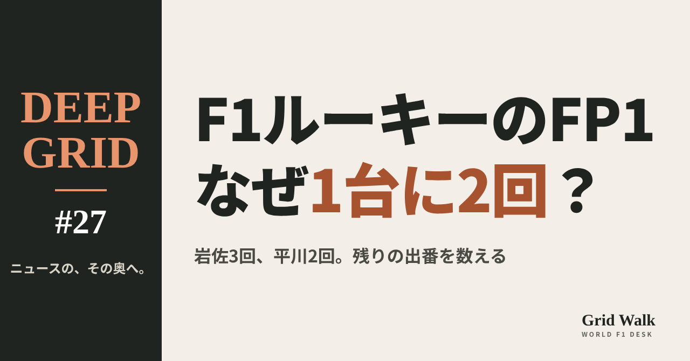
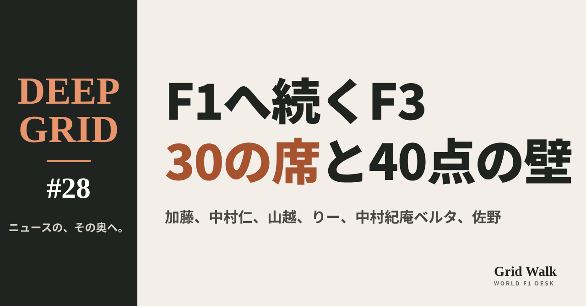

<meta charset="utf-8"><title>DEEP GRID #27・#28 note貼り付け</title>
<style>
/* one column of numbered paste steps; text steps vs image steps differ by marker */
:root{--bg:#F5F4F0;--card:#FFFFFF;--ink:#1D2321;--mute:#5F665F;--line:#DCDAD2;--btn:#1F5FBF;--btnok:#2E8B4F;--img:#E9F3EC;--imgink:#22663B;--sans:'IBM Plex Sans JP','Hiragino Sans','Noto Sans JP',sans-serif}
@media (prefers-color-scheme:dark){:root:not([data-theme="light"]){--bg:#171A19;--card:#202423;--ink:#ECEDE8;--mute:#A3AAA2;--line:#343937;--btn:#4D8BE6;--btnok:#3FA866;--img:#1E2C23;--imgink:#8FD3A6;color-scheme:dark}}
:root[data-theme="dark"]{--bg:#171A19;--card:#202423;--ink:#ECEDE8;--mute:#A3AAA2;--line:#343937;--btn:#4D8BE6;--btnok:#3FA866;--img:#1E2C23;--imgink:#8FD3A6;color-scheme:dark}
body{background:var(--bg);color:var(--ink);font-family:var(--sans);font-size:15px;line-height:1.75;padding:20px 16px 60px}
main{max-width:680px;margin:0 auto;display:grid;gap:28px}
header h1{font-size:22px;margin:0 0 6px;text-wrap:balance}
header p{margin:0;color:var(--mute);font-size:14px}
nav{display:flex;gap:8px;flex-wrap:wrap;margin-top:12px}
nav a{border:1px solid var(--line);border-radius:999px;padding:4px 14px;color:var(--ink);text-decoration:none;font-size:14px;background:var(--card)}
.part h2{font-size:18px;line-height:1.5;margin:0 0 12px;text-wrap:balance;display:flex;gap:10px;align-items:baseline;flex-wrap:wrap}
.tag{font-size:13px;background:var(--ink);color:var(--bg);border-radius:6px;padding:1px 9px}
.steps{list-style:none;margin:0;padding:0;display:grid;gap:12px}
.st{background:var(--card);border:1px solid var(--line);border-radius:12px;padding:12px;min-width:0}
.hd{display:flex;align-items:center;gap:8px;margin-bottom:8px}
.no{width:26px;height:26px;border-radius:50%;background:var(--btn);color:#fff;display:inline-flex;align-items:center;justify-content:center;font-size:13px;font-weight:700;flex:0 0 26px}
.im .no{background:var(--btnok)}
.hd em{font-style:normal;font-size:12px;background:var(--img);color:var(--imgink);border-radius:6px;padding:0 8px}
.bx{font-size:13.5px;line-height:1.7;border:1px solid var(--line);border-radius:8px;padding:8px 10px;max-height:110px;overflow:auto;overflow-wrap:anywhere}
.bx.tall{max-height:150px}.bx p{margin:0 0 6px}.bx h2{font-size:14px;margin:8px 0 4px}.bx a{color:var(--btn)}
.st img{display:block;width:100%;max-width:100%;border:1px solid var(--line);border-radius:8px}
.sub{font-size:12.5px;color:var(--mute);margin:6px 0 0}
.cp{width:100%;margin-top:8px;padding:12px;border:0;border-radius:10px;background:var(--btn);color:#fff;font:600 15px var(--sans);cursor:pointer}
.cp.ok{background:var(--btnok)}.cp.dl{background:var(--btnok)}.cp:focus-visible{outline:3px solid var(--ink);outline-offset:2px}
.xh{font-size:15px;margin:20px 0 10px}
.fb{font-size:13px;line-height:1.7;margin:8px 0 0;padding:8px 10px;border-radius:8px;background:var(--img);color:var(--imgink)}
.opts{display:grid;grid-template-columns:repeat(auto-fill,minmax(240px,1fr));gap:10px}
.opt{min-width:0}.opt img{display:block;width:100%;border:1px solid var(--line);border-radius:8px}
.ol{display:flex;align-items:center;gap:8px;margin-top:6px}.ol b{font-size:13px;flex:0 0 auto}.ol .on{font-size:12.5px;color:var(--mute);flex:1;min-width:0}.ol .cp{width:auto;flex:0 0 auto;padding:9px 14px}.ol .cp{margin:0;padding:9px}
.toast{font-size:13px;color:var(--mute);margin-top:6px}
</style>
<main><header><h1>DEEP GRID #27・#28 note貼り付け</h1><p>2本あります。青い番号は文章、緑は画像です。</p><nav><a href="#p1">#27</a><a href="#p2">#28</a></nav></header><section class="part" id="p1"><h2><span class="tag">DEEP GRID #27</span>ルーキーのFP1は、なぜ「1台に2回」なのか　岩佐歩夢と平川亮の出番を数える【DEEP GRID #27】</h2><ol class="steps">
<li class="st im"><div class="hd"><span class="no">1</span><b>見出し画像</b><em>画像</em></div><button class="cp dl" data-img="img/rookie-fp1.png" data-name="deep-rookie-fp1_見出し画像.png">ダウンロード</button></li>
<li class="st"><div class="hd"><span class="no">2</span><b>タイトル</b></div><div class="bx" id="p1t">ルーキーのFP1は、なぜ「1台に2回」なのか　岩佐歩夢と平川亮の出番を数える【DEEP GRID #27】</div><button class="cp" data-plain="p1t">タイトルをコピー</button></li>
<li class="st"><div class="hd"><span class="no">3</span><b>本文</b></div><div class="bx tall" id="p1r"><p>F1の各チームは、決勝に2戦を超えて出ていないドライバーを、車1台につき年2回、金曜の練習走行で走らせなければならない。2026年の日本人は、ここまで岩佐歩夢が3回、平川亮が2回。条文の中身、チームごとの回数、残り5戦の見通しを、出典つきで整理する。</p><p>データの表と、出典21件はサイトで → <a href="https://f1gridwalk.github.io/deep/rookie-fp1/?utm_source=note&amp;utm_campaign=rookie-fp1">https://f1gridwalk.github.io/deep/rookie-fp1/?utm_source=note&amp;utm_campaign=rookie-fp1</a></p><h2>先に結論</h2><p>① FIAの2026年スポーツ規則のB1.7.3 c)は、各チームに、選手権に出している車1台ごとに2つの大会で、F1の決勝に「2戦を超えて出ていない」ドライバーを使うよう求めている。報道の一覧は、どれもFP1の出走として数えている。</p><p>② 2026年の日本人の出番は5回。岩佐はバルセロナ（レッドブル）、オーストリア（レーシングブルズ）、イタリア（レッドブル）。平川はオーストリアとハンガリー（どちらもハース）。</p><p>③ Pit Debriefは、レーシングブルズは残りのシーズンで「別のルーキーに2回与えればよい」と書いた。これは、開幕の2戦をルーキーとして走ったリンドブラッドを受けた一文だ。条文には、同じ選手を何度も使ってはいけないという文言はない。The Raceの数え方では、レーシングブルズは岩佐のオーストリアを含めて3回済みになる。</p><p>④ メキシコとブラジルで発表済みのルーキーに、日本人はいない（The Race、F1公式）。ただ、レッドブルとハースはまだ2回ずつ、レーシングブルズは1回残している。どの枠に誰を乗せるかは、チームが決める。</p><p>⑤ 決まりの目的について、F1公式は、若手やテスト、リザーブのドライバーにF1の経験を積ませるためと説明している。一方で、走る時間を譲るレギュラーの側には不満もある。2025年、ハースのベアマンは「ルーキーのシーズンなのに、FP1を休まなければならない」と話した。</p><p><strong>あなたは、ルーキーのFP1をもっと増やすべきだと思いますか？</strong></p><h2>続きは F1 Grid Walk で</h2><p>ここから先の「条文には何と書いてあるか」「日本人の5回」「「別のルーキー」とは誰のことか」「残り5戦、日本人の出番はあるか」「なぜこの決まりがあるのか」は、サイトで読めます。チームごとのルーキーFP1（アメリカGPまで）、日本人のFP1の記録（2026年）、B1.7.3の中身、決まりの移り変わりの表も載せています。</p><p><strong>DEEP GRID #27「ルーキーのFP1は、なぜ「1台に2回」なのか　岩佐歩夢と平川亮の出番を数える」</strong></p><p><a href="https://f1gridwalk.github.io/deep/rookie-fp1/">https://f1gridwalk.github.io/deep/rookie-fp1/</a></p><p>━━━━━━━━━━</p><p><strong>F1 Grid Walk では、世界のF1ニュースを毎日日本語でまとめています。</strong></p><p>海外の記事の要約を、毎日載せています。</p><p>ほかの海外記事も読みたい方は、F1 Grid Walkへ。</p><p><a href="https://f1gridwalk.github.io/">https://f1gridwalk.github.io/</a></p><p>━━━━━━━━━━</p><p><a href="https://api.fia.com/system/files/documents/fia_2026_f1_regulations_-_section_b_sporting_-_iss_07_-_2026-06-25.pdf">出典：FIA</a></p><p><a href="https://www.pitdebrief.com/post/2026-f1-fp1-rookies-a-full-list/">出典：Pit Debrief</a></p><p><a href="https://www.the-race.com/formula-1/every-rookie-to-drive-in-fp1-in-f1-2026/">出典：The Race</a></p><p><a href="https://www.formula1.com/en/latest/article/which-rookies-are-getting-fp1-outings-at-the-2026-barcelona-catalunya-grand-prix.QGmlkzT9YriCTNHLoD8SC">出典：Formula 1 公式</a></p><p><a href="https://www.formula1.com/en/latest/article/which-rookies-are-getting-fp1-outings-at-the-austrian-grand-prix.62rA85UKggQs6PujCkH7yZ">出典：Formula 1 公式</a></p><p><a href="https://formula1.com/en/latest/article/which-rookie-drivers-are-getting-fp1-outings-at-the-hungarian-grand-prix.1kS8Yo1hscVdKb4AS3J4eX">出典：Formula 1 公式</a></p><p><a href="https://www.planetf1.com/news/max-verstappen-italian-grand-prix-2026-fp1">出典：PlanetF1</a></p><p><a href="https://haasf1team.com/news/hungarian-grand-prix-practice-recap-1">出典：TGR Haas F1 Team 公式</a></p><p><a href="https://www.the-race.com/formula-1/f1-barcelona-gp-2026-practice-results/">出典：The Race</a></p><p><a href="https://the-race.com/formula-1/f1-austrian-gp-2026-practice-results/">出典：The Race</a></p><p><a href="https://www.crash.net/f1/results/1103508/1/2026-f1-italian-grand-prix-monza-friday-practice-results">出典：Crash.net</a></p><p><a href="https://www.formula1.com/en/latest/article/crawford-set-for-mexico-city-fp1-outing-with-aston-martin.SpGxwvNGILiMifrzBTX7m">出典：Formula 1 公式</a></p><p><a href="https://www.formula1.com/en/latest/article/freddie-slater-to-make-f1-weekend-debut-with-fp1-outings-for-audi-in-mexico-city-and-sao-paulo.25wxy4YykefQKJRX5drRed">出典：Formula 1 公式</a></p><p><a href="https://www.formula1.com/en/latest/article/exclusive-we-see-huge-potential-komatsu-explains-haas-camara-signing-and-whos-likely-to-partner-him.1UnMir55PpgFWVwqGsny4k">出典：Formula 1 公式</a></p><p><a href="https://www.williamsf1.com/articles/fd2853b0-610c-4049-8f9d-f06926edd946/why-are-10-rookies-taking-part-in-abu-dhabi-fp1">出典：Williams Racing 公式</a></p><p><a href="https://www.the-race.com/formula-1/2026-signing-point-less-f2-driver-nine-f1-abu-dhabi-fp1-rookies">出典：The Race</a></p><p><a href="https://the-race.com/formula-1/f1-to-mandate-friday-rookie-running-from-2022/">出典：The Race</a></p><p><a href="https://www.planetf1.com/news/aston-martin-objected-fp1-rookie-plan">出典：PlanetF1</a></p><p><a href="https://www.formula1.com/en/latest/article/7-rule-changes-you-need-to-know-for-the-2025-f1-season.pgdSMDnDyv1aJUgtcKPp6">出典：Formula 1 公式</a></p><p><a href="https://www.motorsport.com/f1/news/oliver-bearman-unhappy-with-f1-rules-i-should-be-able-to-do-fp1/10771499/">出典：Motorsport.com</a></p><p><a href="https://www.the-race.com/formula-1/abu-dhabi-grand-prix-2025-f1-practice-results/">出典：The Race</a></p></div><button class="cp" data-rich="p1r">本文をコピー</button></li>
<li class="st"><div class="hd"><span class="no">4</span><b>ハッシュタグ</b></div><div class="bx" id="p1h">#F1 #F1jp #DEEPGRID #F1解説 #岩佐歩夢 #平川亮</div><button class="cp" data-plain="p1h">タグをコピー</button></li>
</ol><h3 class="xh">X</h3><ol class="steps">
<li class="st im"><div class="hd"><b>X用の画像</b><em>画像</em></div><button class="cp dl" data-img="img/x_rookie-fp1.png" data-name="x_deep-rookie-fp1.png">ダウンロード</button></li>
<li class="st"><div class="hd"><b>① noteをシェアするときの文</b></div><div class="bx" id="p1x0">F1の各チームは、決勝に2戦を超えて出ていないドライバーを、車1台につき年2回、金曜の練習で走らせる決まりがあります。今年の岩佐歩夢3回、平川亮2回の出番と、残りの枠をDEEP GRIDで数えました #F1jp #DEEPGRID</div><button class="cp" data-plain="p1x0">コピー</button></li>
<li class="st"><div class="hd"><b>② ①への返信</b></div><div class="bx" id="p1x1">ほかの海外記事も読みたい方は、F1 Grid Walkへ。
https://f1gridwalk.github.io/deep/rookie-fp1/?utm_source=x&amp;utm_campaign=rookie-fp1</div><button class="cp" data-plain="p1x1">コピー</button></li>
<li class="st"><div class="hd"><b>③ ②への返信</b></div><div class="bx" id="p1x2">毎日の海外F1ニュースは、日本語でこちらにまとめています。
https://f1gridwalk.github.io/</div><button class="cp" data-plain="p1x2">コピー</button></li>
</ol></section><section class="part" id="p2"><h2><span class="tag">DEEP GRID #28</span>F3の日本の若手、2027年の席はどう決まるのか　テスト、育成、お金、スーパーライセンス【DEEP GRID #28】</h2><ol class="steps">
<li class="st im"><div class="hd"><span class="no">1</span><b>見出し画像</b><em>画像</em></div><button class="cp dl" data-img="img/f3-japanese-2027.png" data-name="deep-f3-japanese-2027_見出し画像.png">ダウンロード</button></li>
<li class="st"><div class="hd"><span class="no">2</span><b>タイトル</b></div><div class="bx" id="p2t">F3の日本の若手、2027年の席はどう決まるのか　テスト、育成、お金、スーパーライセンス【DEEP GRID #28】</div><button class="cp" data-plain="p2t">タイトルをコピー</button></li>
<li class="st"><div class="hd"><span class="no">3</span><b>本文</b></div><div class="bx tall" id="p2r"><p>FIA F3の席は、10チームで30。2026年にF3とFRヨーロッパを走った日本の若手6人のうち、2027年のチームが発表されたのは、10月27日の時点で2人だけだ。シーズンが終わったあとのテストは何のためにあるのか。チームは何で選び、お金はどう動くのか。ホンダ、トヨタ、レッドブル、ウィリアムズの育成はどう違うのか。スーパーライセンスの40点は、どこで集めるのか。決まったこと、テストだけのこと、まだ何もないことを分けて読む。</p><p>データの表と、出典40件はサイトで → <a href="https://f1gridwalk.github.io/deep/f3-japanese-2027/?utm_source=note&amp;utm_campaign=f3-japanese-2027">https://f1gridwalk.github.io/deep/f3-japanese-2027/?utm_source=note&amp;utm_campaign=f3-japanese-2027</a></p><h2>先に結論</h2><p>① FIA F3は10チームが3台ずつ、30台で走る。30の席のうち21はすでに埋まり、残りはART、プレマ、DAMSの9席。2027年のチームが発表されたのは、りー海夏澄（ハイテック）と、中村紀庵ベルタ（トライデント）の2人。加藤大翔、中村仁、山越陽悠、佐野雄城の2027年は、10月27日の時点で発表されていない。</p><p>② シーズン後のテストは、ヘレス（10月20〜21日）とバルセロナ（10月26〜27日）で4日間。チームがドライバーを見る場で、来季の席を探すドライバーにとっては走りを見せる場でもある。ただ、テストに出ることは、席の約束ではない。ヘレスの初日は中村紀庵ベルタがトップタイム、バルセロナの初日は加藤と中村仁がそれぞれ午前と午後の5番手だった。</p><p>③ 席を選ぶのはチームだ。成績、経験、育成の後ろ盾、そしてお金がかかわる。F2の1シーズンに200万〜300万ユーロを払うドライバーもいると報じられている。F3には、翌年F2に上がる上位5人に、F2の資金として賞金を出す仕組みがある。今年4位の加藤は、その5人に入っている。</p><p>④ 育成の形はそれぞれ違う。ホンダ（HFDP）とトヨタ（TGR-DC）は、自動車メーカーが主に日本の若手を選んで支える。レッドブルとウィリアムズは、F1チームが自分で若手を選ぶ。中村紀庵ベルタはウィリアムズの育成。山越はどの育成にも入っていない。</p><p>⑤ F1に出るには、スーパーライセンスの40点が要る。F3は王者でも30点なので、F3だけでは足りない。F2で上位に入るのが近道だが、F3にもう1年残って上を狙う道もある。どちらを選ぶかは、席とお金と、点数の計算で決まる。</p><p><strong>あなたが2027年にいちばん注目する日本の若手は誰ですか？</strong></p><h2>続きは F1 Grid Walk で</h2><p>ここから先の「30の席を、誰が取るのか」「ヘレスとバルセロナのテストは、何のためにあるのか」「チームは何で選び、お金はどう動くのか」「ホンダ、トヨタ、レッドブル、ウィリアムズ　育成はどう違うのか」「スーパーライセンスの40点と、F3に残るかF2に上がるか」は、サイトで読めます。2027年の椅子取りボード（2026年10月27日時点）、2027年のFIA F3、発表された席、シーズン後テスト　日本の若手のタイム（ヘレス、バルセロナ初日）、F3の賞金（2025年から）、スーパーライセンスの主な条件の表も載せています。</p><p><strong>DEEP GRID #28「F3の日本の若手、2027年の席はどう決まるのか　テスト、育成、お金、スーパーライセンス」</strong></p><p><a href="https://f1gridwalk.github.io/deep/f3-japanese-2027/">https://f1gridwalk.github.io/deep/f3-japanese-2027/</a></p><p>━━━━━━━━━━</p><p><strong>F1 Grid Walk では、世界のF1ニュースを毎日日本語でまとめています。</strong></p><p>海外の記事の要約を、毎日載せています。</p><p>ほかの海外記事も読みたい方は、F1 Grid Walkへ。</p><p><a href="https://f1gridwalk.github.io/">https://f1gridwalk.github.io/</a></p><p>━━━━━━━━━━</p><p><a href="https://formulascout.com/nakamura-berta-tops-opening-day-of-fia-f3-post-season-testing-in-jerez/140651">出典：Formula Scout</a></p><p><a href="https://formulascout.com/macedo-fastest-for-van-amersfoort-on-day-2-of-fia-f3-testing-in-jerez/140657">出典：Formula Scout</a></p><p><a href="https://formulascout.com/al-azhari-le-and-shin-to-race-for-hitech-in-fia-f3-in-2027/140582">出典：Formula Scout</a></p><p><a href="https://formulascout.com/williams-f1-junior-nakamura-berta-graduates-to-fia-f3-with-trident/140269">出典：Formula Scout</a></p><p><a href="https://formulascout.com/sebastian-wheldon-joins-trident-for-step-up-to-formula-3/140539">出典：Formula Scout</a></p><p><a href="https://formulascout.com/david-joins-deligny-as-var-opts-for-experience-in-2027-f3-line-up/140590">出典：Formula Scout</a></p><p><a href="https://formulascout.com/mercedes-amg-f1-junior-al-dhaheri-completes-vars-exciting-f3-line-up/140596">出典：Formula Scout</a></p><p><a href="https://formulascout.com/rodin-badoer-promoted-to-f2-as-clerot-joined-in-f3-by-seewooruthun/140514">出典：Formula Scout</a></p><p><a href="https://formulascout.com/eurocup-3-champion-james-egozi-becomes-first-ln4-fusion-f3-signing/140573">出典：Formula Scout</a></p><p><a href="https://formulascout.com/gabriel-gomez-joins-lando-norriss-ln4-fusion-for-step-up-to-fia-f3/140629">出典：Formula Scout</a></p><p><a href="https://formulascout.com/taponen-wins-f3-finale-as-ugochukwu-finishes-second-to-take-title/140166">出典：Formula Scout</a></p><p><a href="https://formulascout.com/olivieri-takes-frec-title-as-wheldon-wins-tense-hockenheim-finale/140185">出典：Formula Scout</a></p><p><a href="https://formulascout.com/fia-releases-star-studded-macau-gp-entry-list-for-fr-world-cup/140611">出典：Formula Scout</a></p><p><a href="https://www.pitdebrief.com/post/f3-announces-four-days-of-2026-post-season-testing-in-jerez-and-barcelona/">出典：Pit Debrief</a></p><p><a href="https://www.pitdebrief.com/post/2026-fia-f3-post-season-testing-full-jerez-preview-and-entry-list/">出典：Pit Debrief</a></p><p><a href="https://www.pitdebrief.com/post/2026-fia-f3-post-season-testing-full-barcelona-preview-and-entry-list/">出典：Pit Debrief</a></p><p><a href="https://www.pitdebrief.com/post/prema-racing-confirms-powell-nakamura-and-molnar-for-2026-fia-f3-post-season-testing/">出典：Pit Debrief</a></p><p><a href="https://www.pitdebrief.com/post/nakamura-berta-highlights-learning-curve-after-topping-2026-f3-jerez-testing/">出典：Pit Debrief</a></p><p><a href="https://www.pitdebrief.com/post/a-review-of-2026-frec-olivieri-and-r-ace-gp-triumph-in-unpredictable-new-era/">出典：Pit Debrief</a></p><p><a href="https://www.pitdebrief.com/post/tgr-continues-its-commitment-to-developing-motorsport-talent-in-2026/">出典：Pit Debrief</a></p><p><a href="https://www.pitdebrief.com/post/everything-you-need-to-know-about-the-2027-fia-formula-3-season/">出典：Pit Debrief</a></p><p><a href="https://www.pitdebrief.com/post/mattia-colnaghi-joins-campos-racing-for-2027-fia-f3-season/">出典：Pit Debrief</a></p><p><a href="https://www.pitdebrief.com/post/zhenrui-chi-joins-mp-motorsport-for-2027-fia-f3-season/">出典：Pit Debrief</a></p><p><a href="https://www.pitdebrief.com/post/2026-fia-f3-post-season-testing-day-1-barcelona/">出典：Pit Debrief</a></p><p><a href="https://formulascout.com/de-palo-top-for-mp-motorsport-on-day-1-of-fia-f3-barcelona-test/140668">出典：Formula Scout</a></p><p><a href="https://api.fia.com/news/frec-sano-converts-pole-hungaroring-race1-win">出典：FIA</a></p><p><a href="https://www.williamsf1.com/articles/51c5fa34-42c2-486f-b9ad-dbc704da5562/kean-nakamura-berta-williams-f1-team-driver-academy">出典：ウィリアムズ公式</a></p><p><a href="https://www.as-web.jp/overseas/1363950">出典：autosport web</a></p><p><a href="https://www.formula1.com/en/latest/article/formula-3-confirm-the-10-teams-selected-for-2025-2027-seasons.5jpvPpmxpfvVqj1bqbM1Rz">出典：F1公式サイト</a></p><p><a href="https://www.formula1.com/en/latest/article/formula-3-announces-eur1-million-prize-fund-for-top-five-drivers-from-2025.7lDoUg1iP1wcuoHyjD25pM">出典：F1公式サイト</a></p><p><a href="https://www.motorsport.com/fia-f3/news/formula-3-announces-1-million-prize-fund-with-immediate-effect/10762118/">出典：Motorsport.com</a></p><p><a href="https://www.formula1.com/en/latest/article/f3-nakamura-earns-his-first-win-after-title-rivals-ugochukwu-and-slater-come-to-blows-in-belgium.7wXYPHIRBQRX8iM8L46M79">出典：F1公式サイト</a></p><p><a href="https://www.formula1.com/en/latest/article/who-are-the-reserve-drivers-for-each-f1-team-in-2026.Ce8YvwuVJGLkVNgERX21U">出典：F1公式サイト</a></p><p><a href="https://www.vanamersfoortracing.nl/news/2026/van-amersfoort-racing-welcomes-hiyu-yamakoshi-for-fia-formula-2-debut-in-baku/">出典：Van Amersfoort Racing 公式</a></p><p><a href="https://www.art-grandprix.com/en/taito-kato-steps-up-to-fia-formula-3-with-art-for-2026/">出典：ARTグランプリ公式</a></p><p><a href="https://honda.racing/features/honda-2026-motorsports-program-overview">出典：Honda Racing 公式</a></p><p><a href="https://honda.racing/features/forging-a-future-taito-katos-continued-rise-through-the-ranks">出典：Honda Racing 公式</a></p><p><a href="https://racingnews365.com/red-bull-sign-two-new-potential-future-stars">出典：RacingNews365</a></p><p><a href="https://www.gpfans.com/nl/f1-nieuws/1065080/fia-past-punten-aan-voor-f1-superlicentie-in-formule-regional-en-formule-4/">出典：GPFans（オランダ版）</a></p><p><a href="https://api.fia.com/system/files/documents/appendix_l_2026_publie_le_24_juin_2026.pdf">出典：FIA</a></p></div><button class="cp" data-rich="p2r">本文をコピー</button></li>
<li class="st"><div class="hd"><span class="no">4</span><b>ハッシュタグ</b></div><div class="bx" id="p2h">#F1 #F1jp #DEEPGRID #F1解説 #FIAF3 #日本人ドライバー</div><button class="cp" data-plain="p2h">タグをコピー</button></li>
</ol><h3 class="xh">X</h3><ol class="steps">
<li class="st im"><div class="hd"><b>X用の画像</b><em>画像</em></div><button class="cp dl" data-img="img/x_f3-japanese-2027.png" data-name="x_deep-f3-japanese-2027.png">ダウンロード</button></li>
<li class="st"><div class="hd"><b>① noteをシェアするときの文</b></div><div class="bx" id="p2x0">F3の席は30。日本の若手6人のうち、2027年のチームが決まったのはまだ2人です。シーズン後のテスト、育成、お金、スーパーライセンスの40点まで、席がどう決まるかをDEEP GRIDで深掘りしました #F1jp #DEEPGRID</div><button class="cp" data-plain="p2x0">コピー</button></li>
<li class="st"><div class="hd"><b>② ①への返信</b></div><div class="bx" id="p2x1">ほかの海外記事も読みたい方は、F1 Grid Walkへ。
https://f1gridwalk.github.io/deep/f3-japanese-2027/?utm_source=x&amp;utm_campaign=f3-japanese-2027</div><button class="cp" data-plain="p2x1">コピー</button></li>
<li class="st"><div class="hd"><b>③ ②への返信</b></div><div class="bx" id="p2x2">毎日の海外F1ニュースは、日本語でこちらにまとめています。
https://f1gridwalk.github.io/</div><button class="cp" data-plain="p2x2">コピー</button></li>
</ol></section></main><script>
function done(b,msg){const t=b.dataset.t||b.textContent;b.dataset.t=t;b.classList.add('ok');b.textContent=msg||'コピーしました';setTimeout(()=>{b.classList.remove('ok');b.textContent=t},2000)}
function selectEl(el){const r=document.createRange();r.selectNodeContents(el);const s=getSelection();s.removeAllRanges();s.addRange(r)}
async function rich(el,b){
  try{await navigator.clipboard.write([new ClipboardItem({'text/html':new Blob([el.innerHTML],{type:'text/html'}),'text/plain':new Blob([el.innerText],{type:'text/plain'})})]);done(b);return}catch(e){}
  selectEl(el);let ok=false;try{ok=document.execCommand('copy')}catch(e){}
  if(ok){getSelection().removeAllRanges();done(b)}else{done(b,'選択しました。コピーしてください')}}
async function plain(el,b){
  try{await navigator.clipboard.writeText(el.innerText);done(b);return}catch(e){}
  selectEl(el);let ok=false;try{ok=document.execCommand('copy')}catch(e){}
  if(ok){getSelection().removeAllRanges();done(b)}else{done(b,'選択しました。コピーしてください')}}
let dlns=null;(async()=>{try{dlns=await window.claude?.use?.("downloads")}catch(e){dlns=null}})();
async function img(src,b){
  b.dataset.t=b.dataset.t||b.textContent;
  if(!dlns){try{dlns=await window.claude?.use?.("downloads")}catch(e){}}
  if(!dlns){b.textContent='ダウンロードできませんでした';setTimeout(()=>{b.textContent=b.dataset.t},3500);return}
  try{const blob=await fetch(src).then(r=>r.blob());b.textContent='保存の確認を開いています…';
    await dlns.save({filename:b.dataset.name,data:blob});done(b,'ダウンロードしました')}
  catch(e){const c=e&&e.code;b.textContent=c==='declined'?'キャンセルしました':c==='rate_limited'?'少し待ってからもう一度押してください':'ダウンロードできませんでした';setTimeout(()=>{b.textContent=b.dataset.t},3500)}}
document.querySelectorAll('.cp').forEach(b=>b.addEventListener('click',()=>{
  if(b.dataset.rich)rich(document.getElementById(b.dataset.rich),b);
  else if(b.dataset.plain)plain(document.getElementById(b.dataset.plain),b);
  else img(b.dataset.img,b)}));
</script>